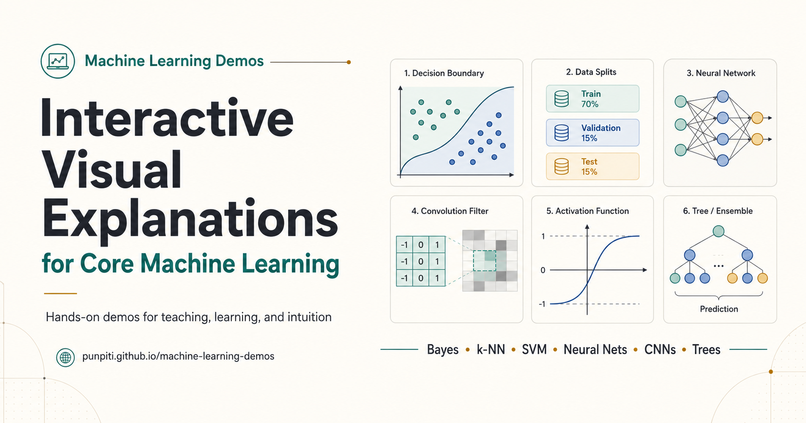

Machine Learning Demos: เมื่อแนวคิดนามธรรมกลายเป็นสิ่งที่ทดลองได้
{kind=link}

แนวคิด Machine Learning จำนวนมากเข้าใจยากไม่ใช่เพราะสมการอย่างเดียว แต่เพราะผู้เรียนมองไม่เห็นสิ่งที่เกิดขึ้นระหว่างข้อมูลเข้าและคำตอบออก Machine Learning Demos จึงถูกสร้างเป็นชุดสื่อ interactive ขนาดเล็กสำหรับใช้สอน ทดลอง และสร้าง intuition
แทนที่จะเห็นเพียงผลลัพธ์สุดท้าย ผู้เรียนสามารถปรับข้อมูล เปลี่ยน parameter เดินทีละขั้น และดูว่า decision boundary, error, gradient, hidden representation หรือการลงคะแนนของโมเดลเปลี่ยนไปอย่างไร
เริ่มจากข้อมูล ก่อนรีบไปที่สูตร
บาง demo เริ่มจากสถานการณ์ง่ายที่สุด เช่น การทายด้วย coin flip แล้วค่อยเพิ่มสัญญาณทีละตัว เพื่อให้เห็นว่าข้อมูลเปลี่ยนคุณภาพของการตัดสินใจอย่างไร ส่วน confusion matrix เปิดให้สร้างข้อมูลและเห็น TP, FP, TN, FN, precision และ recall คำนวณตามสิ่งที่เลือกแบบทันที
อีก demo แยกข้อมูล iris เป็น train, validation และ test ก่อนฝึกโมเดล ทำให้ผู้เรียนเห็นว่าทำไม test set ควรถูกเปิดเพียงครั้งเดียวหลังเลือกโมเดลแล้ว แนวคิดที่มักถูกจำเป็นกฎจึงกลายเป็นกระบวนการที่มองเห็นเหตุผลได้
เห็นการเปลี่ยนจากหลักฐานไปเป็นการตัดสินใจ
ตัวอย่าง Bayes เปิดข้อมูลทีละชิ้นแล้วแสดงการเปลี่ยนจาก prior ผ่าน likelihood ไปสู่ posterior ขณะที่ Parzen Windows และ k-NN ช่วยเปรียบเทียบว่าการนิยาม “เพื่อนบ้าน” ต่างกันอย่างไร และเหตุใดขนาดของบริเวณที่ใช้พิจารณาจึงมีผลต่อคำตอบ
ในกลุ่ม decision boundaries ผู้เรียนสามารถเปรียบเทียบ Bayes กับ logistic regression เดินตาม arithmetic ของ SGD ทีละจุด สำรวจผลของ activation function และดูว่า SVM เลือก support vectors เพื่อสร้าง margin อย่างไร
เปิดกล่องดำของ Neural Networks
Backpropagation on XOR แสดงตัวเลขตั้งแต่ forward pass, loss, backward pass ไปจนถึง parameter update ในโครงข่าย 2–2–1 ส่วน explorer เปิดให้เปลี่ยนจำนวน hidden units และ activation functions เพื่อทดลองว่ารูปแบบเครือข่ายส่งผลต่อการเรียนรู้อย่างไร
Convolution demo ให้เลื่อน filter 3×3 บนข้อมูลเรดาร์ฝนด้วยตนเอง ก่อนเปรียบเทียบ filter ที่ออกแบบไว้กับ filter ที่เรียนรู้จาก gradient descent ส่วน autoencoder เปิดให้วาด bitmap แล้วตรวจดู hidden features และภาพ reconstruction
จากต้นไม้หนึ่งต้นสู่การเรียนรู้แบบ ensemble
Random Forest Voting Lab เปิดให้ดู bootstrap samples, random feature splits และคะแนนเสียงของต้นไม้แต่ละต้น ขณะที่ XGBoost Residuals Lab แสดงการสร้างโมเดลทีละรอบ และให้เห็นว่าต้นไม้ชุดใหม่กำลังแก้ residual ที่รอบก่อนหน้าทิ้งไว้อย่างไร
ความแตกต่างระหว่าง Random Forest กับ boosting จึงไม่เหลือเพียงคำจำว่า “ขนาน” กับ “ต่อเนื่อง” แต่กลายเป็นกลไกที่ผู้เรียนกดดูและติดตามได้
Interactive demo ไม่ได้แทนทฤษฎี แต่ทำให้ทฤษฎีมีที่ยืน
การทดลองด้วยภาพอาจทำให้เข้าใจเร็วขึ้น แต่ไม่ได้ทำให้สมการ นิยาม และข้อพิสูจน์หมดความสำคัญ หน้าที่ของ demo คือสร้าง mental model ให้ผู้เรียนรู้ว่าตัวแปรกำลังแทนอะไร กลไกส่วนใดทำให้ผลเปลี่ยน และควรถามอะไรเมื่อผลไม่เป็นไปตามคาด
เมื่อมี intuition แล้ว การกลับไปอ่านสูตรจะไม่ใช่การจำสัญลักษณ์ลอย ๆ แต่เป็นการให้ภาษาที่แม่นยำกับสิ่งที่เคยเห็นและทดลองมาก่อน นี่คือสะพานจาก เห็น → ทดลอง → อธิบาย → เข้าใจอย่างเป็นระบบ
ทดลองใช้งาน Machine Learning Demos เปิด interactive visual explanations ที่จัดตามบทของรายวิชา Advanced Machine Learning